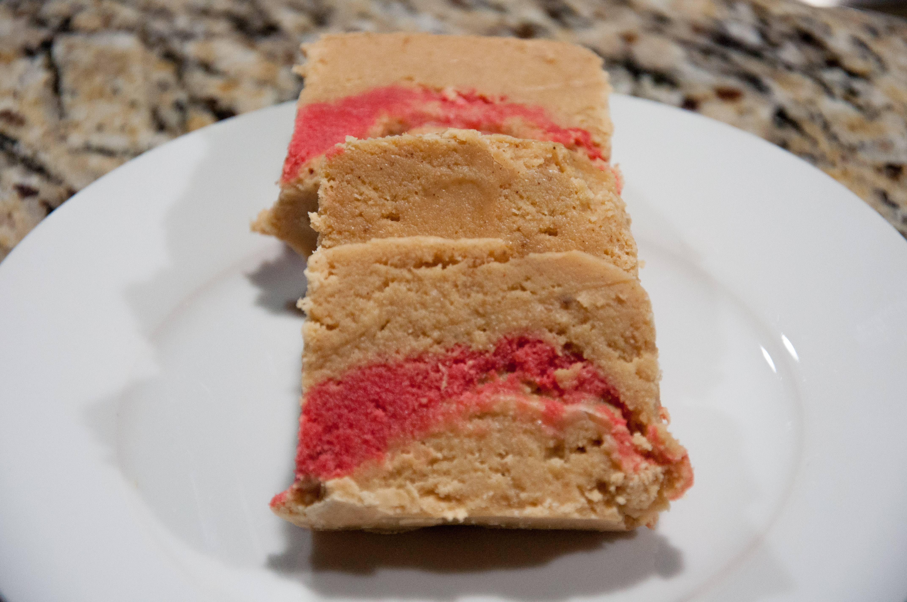

Dous Makos (Haitian Fudge)

Dous Makos is a type of fudge originating from Petit-Goave, Haiti. The dessert typically contains 3 signature stripes a light colored vanilla layer, a chocolate layer, and a red layer made using food coloring.
The candy has many different types of flavors such as chocolate, vanilla, almonds, peanut butter, citrus, etc. In this recipe we'll be making the traditional vanilla version.
Ingredients
- 2 Cups of sugar
- 1/2 Cups of Whole Milk
- 1 Can of sweetened condensed milk (14 ounces)
- 8 Tbs of butter
- 1 tsp vanilla extract
- 1/4 tsp of Anise star extract
- 1/4 tsp of nutmeg
- 1/4 tsp of cinnamon
- Red Food Coloring (Optional red layer)
- 1/4 tsp of cocoa powder (Optional Dark brown layer)
- wax paper
- mini loaf pans
Cooking Steps
- In a 3 quart non-stick pot, add all ingredients (except food coloring and cocoa power) and cook on medium heat until sugar dissolves while constantly stirring.
- Once sugar dissolves, raise heat to high and continue stirring for 20 - 25 min or until mix has a lava consistency. If you have a candy thermometer it will be around 115 °C.
- Remove the pot off the heat and continue stirring for another 10-15 min. The mix will start to lose its shinny color as it cools.
- OPTIONAL - If you want to make the signature stripes, take half the mix and separate the half into 2 containers. Add 2 drops of food coloring in the first and a 1/4 tsp of coca powder in the second. Mix the thoroughly.
- Place wax paper in the mini loaf pans and fill it with the mix.
- Allow the mix to cool and harden for about an hour.
- Store in a cool place.